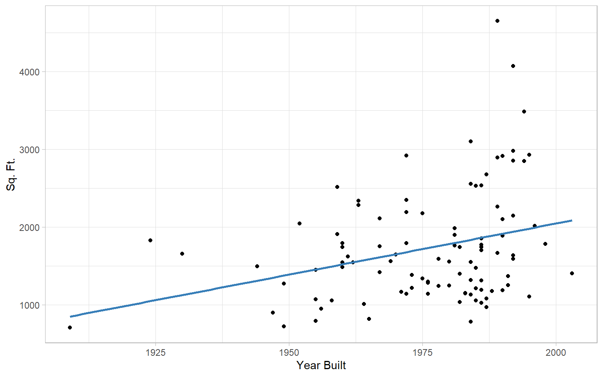

Lecture 20: Unbalanced Sample Sizes
Review
- \(\chi\)-square tests of association let us test for the (in)dependence of two categorical variables.
- Another way to think of this is that they let us test the correlations between two categorical variables.
- Methods like \(t\)-tests and ANOVA let us compare the means of different groups based on factors
- Another way to think of this is that they let us test the correlations between categorical and continuous variables
Today we are going to look at correlations between two continuous variables.
Scatterplots
Scatterplots are used to visualize the relationship between two variables
- \(x\)-axis: predictor (\(x\))
- \(y\)-axis: criterion (\(y\))
We might also impose regression lines onto the scatterplot
- Linear
- Quadratic
- Cubic
- Nonparametric
Example: year a home was built vs. square footage
Scatterplot Example

Covariance
Recall:
Variance is the average squared deviation score
\[s^2_x = \frac{{\color{#377EB8}\sum_{i=1}^N} {\color{#4DAF4A}(x_i - \bar{x})}{\color{#984EA3}^2}}{{\color{#377EB8}N-1}}\]
Covariance is the average cross-product of deviation scores
\[s_{xy} = \frac{{\color{#377EB8}\sum_{i=1}^N} {\color{#4DAF4A}(x_i - \bar{x})} {\color{#984EA3}\times} {\color{#4DAF4A}(y_i - \bar{y})}}{{\color{#377EB8}N-1}}\]
Variance vs. Covariance
The covariance of \(x\) with \(x\) is identical to the variance of \(x\)
- Covariance is a generalization of variance
- Unlike variance, covariance can be negative. Why?
- Numerator of variance is guaranteed to be positive because it is a sum of squares. Covariance is not!
- Covariance is the unstandardized linear relationship between two variables
- Unstandardized: in terms of the original variable units
Covariance
Sample covariance:
\[s_{xy} = \frac{\sum_{i=1}^N[(x_i - \bar{x})(y_i - \bar{y})]}{N-1}\]
Population covariance:
\[\sigma_{xy} = \frac{\sum_{i=1}^N[(x_i - \mu_x)(y_i - \mu_y)]}{N}\]
- \(\bar{x}\): sample mean of \(x\)
- \(\bar{y}\): sample mean of \(y\)
- \(\mu_x\): population mean of \(x\)
- \(\mu_y\): population mean of \(y\)
\(s_{xy}\), computed as above, is an unbiased estimator of \(\sigma_{xy}\)
Covariance
How to interpret the covariance:
- \(s_{xy} > 0\): Linear relationship between \(x\) and \(y\) is positive
- \(s_{xy} < 0\): Linear relationship between \(x\) and \(y\) is negative
- \(s_{xy} = 0\): No linear relationship between \(x\) and \(y\)
- \(s_{xy}\) is in \(x \times y\) units, cannot be interpreted easily
- similar to how variance is in squared units
- Magnitude of \(s_{xy}\) depends on the magnitude of \(s^2_{x}\) and \(s^2_{y}\)
Correlation
Pearson Product Moment (PPM) correlation is a standardized covariance:
\[r_{xy} = \frac{s_{xy}}{s_x s_y} = \frac{\sum_{i=1}^N(x_i - \bar{x})(y_i - \bar{y})}{\sqrt{\sum_{i=1}^N(x_i - \bar{x})^2}\sqrt{\sum_{i=1}^N(y_i - \bar{y})^2}}\]
- \(s_{xy}\) is the sample covariance
- \(s_x s_y\) is the product of the sample variances
PPM Correlation
- The PPM is the most common type of correlation
- If not specified, safe to assume that a correlation is a PPM
- Equals the degree to which to variables co-vary in terms of their \(SD\)s
- Scale-free
- Correlations range from -1 to 1
- Correlations of 0 indicate no linear relationship
- The sign of a correlation is the same as the sign of the covariance
Linearity
Last plot highlights important limitation
- Correlation (and covariance) represent linear relationships
- Was the relationship in the last plot linear?
- Possible solutions to non-linearity
- Transform one or more variables
- Transform combinations of variables
- Break correlation into separate sections
More later!
Covariance Matrices
We can summarize the relationships among many variables with a covariance matrix
- Square symmetrical table where each row and column represents one variable
- Cells represent \(\text{cov(row variabe, column variable)}\)
- Row 1, column 2 = covariance between variable 1 and 2
- What will row 2, column 2 be?
- The variance of variable 2
- We refer to elements where row # = column # as the diagonal
Covariance Matrix
|
|
Year Built
|
Sq. Ft.
|
Story
|
|
Year Built
|
273.72
|
3,597.92
|
2.50
|
|
Sq. Ft.
|
3,597.92
|
517,543.42
|
154.79
|
|
Story
|
2.50
|
154.79
|
0.20
|
- Diagonal (Grey Highlight): Variances of individual variables (\(s^2_{\text{Year Built}} = 273.72\), \(s^2_{\text{Sq. Ft.}} = 517,543.42\), \(s^2_{\text{Story}} = 0.20\)).
- Off-Diagonal (Color Pairs): Covariances between variable pairs (\(s_{xy} = s_{yx}\))
- Covariances are hard to interpret!
- What are \(\text{year built} \times \text{square feet}\) units??
Correlation Matrix
A correlation matrix standardizes everything into correlations
|
|
Year Built
|
Sq. Ft.
|
Story
|
|
Year Built
|
1.00
|
0.30
|
0.34
|
|
Sq. Ft.
|
0.30
|
1.00
|
0.48
|
|
Story
|
0.34
|
0.48
|
1.00
|
- Diagonal (Grey Highlight): Correlation of variable with itself is always 1
- Off-Diagonal (Color Pairs): Correlations between variable pairs (\(r_{xy} = r_{yx}\))
Other Types of PPM
\(\phi\) correlation
- PPM between two categorical variables
- For a \(2 \times 2\) contingency table, \(\phi^2 = \frac{\chi^2}{N}\)
Point-biserial correlation
- PPM between one continuous and one categorical variable
- Statistically equivalent to an independent sample \(t\)-test!
- \(y\) = continuous variable
- group = categorical variable
Ordinal Correlations
Spearman’s rho (\(\rho\)):
- Assign ranks to each variable
- Compute the PPM between ranks
Kendall’s tau (\(\tau\)):
Consider all possible pairs of values
Do \(x\) and \(y\) order values in the same way?
\[\tau = \frac{(\# \text{concordant pairs}) - (\# \text{discordant pairs})}{\binom{n}{2}}\]
\[\binom{n}{2} = \frac{n(n-1)}{2} = \# \text{ of pairs to compare}\]
\(\rho\) and \(\tau\)
| A |
1 |
4 |
1 |
2 |
A, B |
Concordant |
| B |
2 |
5 |
2 |
3 |
A, C |
Discordant |
| C |
3 |
2 |
3 |
1 |
B, C |
Discordant |
Spearman:
\[\rho = \text{cor}\left(\text{rank}(x), \text{rank}(y)\right) = -0.5\]
Kendall:
\[\tau = \frac{1 - 2}{3 \times 2 / 2} = -0.33\]
Woodward Data
Examples I have been using involve relationship among buildings built at different times
dat <- readxl::read_xls("../../data/woodard.xls") |>
mutate(has_fireplace = Fireplaces > 0,
multi_bath = `No. Baths` > 1)
Covariance and Matrix
Single covariance using cov()
cov(dat$`Year Built`, dat$`Sq. Ft.`)
Covariance matrix using cov()
round(cov(dat |> select(`Year Built`, `Sq. Ft.`, Story)), 2)
Year Built Sq. Ft. Story
Year Built 273.72 3597.92 2.50
Sq. Ft. 3597.92 517543.42 154.79
Story 2.50 154.79 0.20
Correlation and Matrix
Single correlation using cor()
cor(dat$`Year Built`, dat$`Sq. Ft.`)
Covariance matrix using cov()
round(cor(dat |> select(`Year Built`, `Sq. Ft.`, Story)), 2)
Year Built Sq. Ft. Story
Year Built 1.00 0.30 0.34
Sq. Ft. 0.30 1.00 0.48
Story 0.34 0.48 1.00
Categorical Variables
\(\phi\) using cor() with use = "pairwise.complete.obs" to ignore missing values
round(cor(dat$has_fireplace, dat$multi_bath, use = "pairwise.complete.obs"), 2)
Point biserial using cor()
round(cor(dat$has_fireplace, dat$`Year Built`, use = "pairwise.complete.obs"), 2)
Ordinal Correlations
\(\rho\) using cor()
round(cor(dat$`Year Built`, dat$`Sq. Ft.`, method = "spearman"), 2)
\(\tau\) using cor()
round(cor(dat$`Year Built`, dat$`Sq. Ft.`, method = "kendall"), 2)